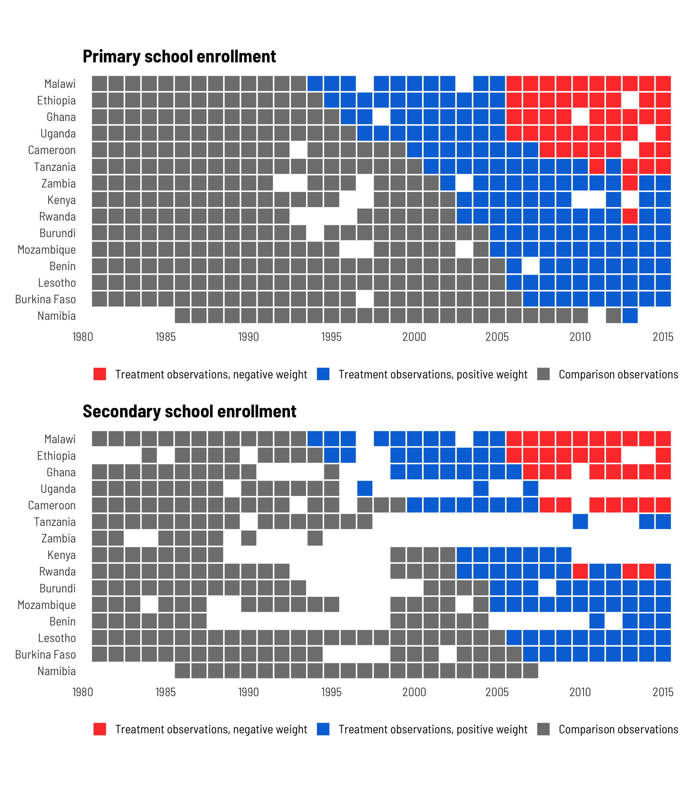

![]()
library(tidyverse) # For ggplot2, dplyr, and friends
library(haven) # For reading Stata files
library(fixest) # One way of doing fixed effects regression
library(estimatr) # Another way of doing fixed effects regression
library(broom) # For converting model objects to data frames
library(kableExtra) # For pretty tables
library(modelsummary) # For pretty regression tables
library(patchwork) # For combining plots
library(scales) # For nice formatting functions
# Custom ggplot theme to make pretty plots
# Get the font at https://fonts.google.com/specimen/Barlow+Semi+Condensed
theme_clean <- function() {
theme_minimal(base_family = "Barlow Semi Condensed") +
theme(panel.grid.minor = element_blank(),
plot.title = element_text(face = "bold"),
axis.title = element_text(family = "Barlow Semi Condensed Medium"),
strip.text = element_text(family = "Barlow Semi Condensed",
face = "bold", size = rel(1), hjust = 0),
strip.background = element_rect(fill = "grey80", color = NA),
plot.caption = element_text(hjust = 0))
}The world of econometrics has been roiled over the past couple years with a bunch of new papers showing how two-way fixed effects (TWFE; situations with nested levels of observations, like country-year, state-month, etc.) estimates of causal effects from difference-in-differences-based natural experiments can be biased when treatment is applied at different times. There are a ton of these papers, like de Chaisemartin and d’Haultfoeuille (2020), Goodman-Bacon (2021), Sun and Abraham (2020), Callaway and Sant’Anna (2020), and Baker, Larcker, and Wang (2021). And they’re all really technical and scary.
I’ve been peripherally following these discussions on Twitter, since I teach a class on causal inference and include a couple sessions and assignments on difference-in-differences approaches, and since I do lots of research with country-year panel data (see all my posts on marginal structural models for more on that), but I’ve admittedly been lost in the mathy details of all these papers and I’ve been slightly terrified of trying to work through these papers and figuring out what this differential timing bias actually looks like in real life. I’m not a real economist or econometrician (I just teach microeconomics and econometrics lolz), so this world is still pretty intimidating for me.
But Pamela Jakiela recently posted a working paper called “Simple Diagnostics for Two-Way Fixed Effects” (Jakiela 2021) where she presents an easy-to-follow example of all this newfangled TWFE work, so I figured I’d finally officially plunge into this new TWFE world and try to figure out what it all means. Her paper is fantastic—you should read it if you want a quick introduction to the issues of differential timing and TWFE and if you want some easy ways to see how bad these situations might bias causal estimates.
In the spirit of Vincent Arel-Bundock, who publicly codes through more technical papers to understand them better (see this or this or this), this post is my attempt at translating Jakiela’s paper from conceptual math and Stata code into R. Here we go!
A different way of thinking about OLS coefficients
Before diving into the issues that come with TWFE estimation (and Jakiela’s proposed diagnostics), we first have to think about regression coefficients in a slightly different way (that was completely new to me!)
To do this, let’s make some simulated data to play with. We have two variables: (1) an outcome that ranges from ≈400–2000, and (2) a continuous treatment that ranges from ≈2–70. For the sake of simplicity, we’ll pretend that the outcome represents weekly income, and the treatment is some sort of social policy (test scores from some job training program? idk—imagine something neat here). We’ll also pretend that this treatment is experimental so we can talk about causation here.
set.seed(1234) # For reproducibility
n_rows <- 500
fake_data <- tibble(treatment = rbeta(n_rows, shape1 = 3, shape2 = 7)) %>%
mutate(treatment = round(treatment * 100)) %>%
# Build the outcome based on some baseline level of outcome + a boost in
# outcome that happens because of the treatment + some noise
mutate(outcome_baseline = rnorm(n_rows, mean = 800, sd = 200),
treatment_boost = 10 * treatment,
outcome = outcome_baseline + treatment_boost + rnorm(n_rows, 200, 100)) %>%
select(outcome, treatment)
head(fake_data)
## # A tibble: 6 × 2
## outcome treatment
## <dbl> <dbl>
## 1 514. 13
## 2 1550. 35
## 3 1562. 52
## 4 1037. 4
## 5 1137. 38
## 6 1277. 39For reference, here’s what the distributions of these variables look like, along with the relationship between treatment and outcome:
Code
hist_out <- ggplot(fake_data, aes(x = outcome)) +
geom_histogram(binwidth = 100, color = "white",
boundary = 0, fill = "#FFA615") +
scale_x_continuous(labels = dollar_format()) +
labs(title = "Distribution of outcome",
x = "Outcome", y = "Count") +
coord_cartesian(ylim = c(0, 80)) +
theme_clean() +
theme(panel.grid.major.x = element_blank())
hist_trt <- ggplot(fake_data, aes(x = treatment)) +
geom_histogram(binwidth = 5, color = "white",
boundary = 0, fill = "#A4BD0A") +
labs(title = "Distribution of treatment",
x = "Treatment", y = "Count") +
coord_cartesian(ylim = c(0, 80)) +
theme_clean() +
theme(panel.grid.major.x = element_blank())
plot_trt_out <- ggplot(fake_data, aes(x = treatment, y = outcome)) +
geom_point(size = 0.75) +
geom_smooth(method = "lm", color = "#0599B0") +
scale_y_continuous(labels = dollar_format()) +
labs(title = "Effect of treatment on outcome",
x = "Treatment", y = "Outcome") +
theme_clean()
(hist_out + hist_trt) / plot_spacer() / plot_trt_out +
plot_layout(heights = c(0.28, 0.02, 0.7))We can find the average treatment effect (ATE) of this imaginary program on the outcome using a simple univariate regression model:
\[ \color{gray}{\overbrace{\color{#FFA615}{Y}}^{\text{Outcome}}_{\underbrace{\color{#FFA615}{i}}_{\text{An individual}}}} \color{black}{=} \color{gray}{\overbrace{\color{black}{\alpha}}^{\text{Intercept}}} \color{black}{+} \color{gray}{\underbrace{\color{#0599B0}{\beta}}_{\text{ATE}}} \color{gray}{\overbrace{\color{#A4BD0A}{D_i}}^{\text{Treatment}}} \color{black}{+} \color{gray}{\overbrace{\color{black}{\epsilon_i}}^{\text{Error}}} \]
model_effect <- lm(outcome ~ treatment, data = fake_data)
tidy(model_effect)
## # A tibble: 2 × 5
## term estimate std.error statistic p.value
## <chr> <dbl> <dbl> <dbl> <dbl>
## 1 (Intercept) 1001. 22.5 44.6 5.70e-176
## 2 treatment 9.69 0.672 14.4 1.26e- 39This is just regular old OLS regression. Based on this model, a 1-unit increase in treatment causes a $9.69 increase in the outcome. Lovely.
Jakiela (2021, 4) shows an alternate way of calculating \(\beta\), though, based on the Frisch-Waugh-Lovell theorem, which is an econometrics idea that I’ve never heard of (since I’m defs not an economist). According to this theorem, we can rewrite the OLS estimate of \(\beta\) based on the residuals (\(\tilde{D}_i\)) of a model that predicts treatment:
\[ \color{#0599B0}{\beta}\ \color{black}{=}\ \sum_i \color{#FFA615}{Y_i} \color{black}\left( \frac{\color{#353D03}{\tilde{D}_i}}{\sum_i \color{#353D03}{\tilde{D}_i}^2} \right) \]
Since this is a univariate model, the residuals here are really just the deviations from the average value of the treatment, or \(D_i - \bar{D}\). We can confirm this by running an intercept-only model and comparing it to \(D_i - \bar{D}\):
trt_resid <- lm(treatment ~ 1, data = fake_data)
fake_data_resid <- fake_data %>%
mutate(treatment_resid = residuals(trt_resid)) %>%
mutate(mean_treat = mean(treatment),
diff = treatment - mean_treat)
head(fake_data_resid)
## # A tibble: 6 × 5
## outcome treatment treatment_resid mean_treat diff
## <dbl> <dbl> <dbl> <dbl> <dbl>
## 1 514. 13 -17.2 30.2 -17.2
## 2 1550. 35 4.82 30.2 4.82
## 3 1562. 52 21.8 30.2 21.8
## 4 1037. 4 -26.2 30.2 -26.2
## 5 1137. 38 7.82 30.2 7.82
## 6 1277. 39 8.82 30.2 8.82The treatment_resid and diff columns here are identical. Now that we have \(\tilde{D}_i\), we can use that fancy rewritten formula and calculate \(\beta\):
WHAAAAAT it’s the same ATE that we get from running a regular OLS model! That’s magical!
The reason Jakiela reparameterizes \(\beta\) this way is because looking at residuals like this creates inherent weights for each observation. Essentially, \(\beta\) is a weighted sum of the outcome variable, with the weights calculated with \(\frac{\tilde{D}_{it}}{\sum_{it} \tilde{D}_{it}^2}\), or (treatment_resid / sum(treatment_resid^2)). We can calculate the weights for each observation:
fake_data_with_weights <- fake_data_resid %>%
mutate(treatment_weight = treatment_resid / sum(treatment_resid^2))
head(fake_data_with_weights)
## # A tibble: 6 × 6
## outcome treatment treatment_resid mean_treat diff treatment_weight
## <dbl> <dbl> <dbl> <dbl> <dbl> <dbl>
## 1 514. 13 -17.2 30.2 -17.2 -0.000168
## 2 1550. 35 4.82 30.2 4.82 0.0000471
## 3 1562. 52 21.8 30.2 21.8 0.000213
## 4 1037. 4 -26.2 30.2 -26.2 -0.000255
## 5 1137. 38 7.82 30.2 7.82 0.0000764
## 6 1277. 39 8.82 30.2 8.82 0.0000861In this case, given that this is overly perfect simulated data, the weights are really small. In theory, the weights should sum up to 0. Let’s check that really quick:
fake_data_with_weights %>%
summarize(total_weights = sum(treatment_weight))
## # A tibble: 1 × 1
## total_weights
## <dbl>
## 1 -4.61e-19We can visualize the distribution of weights too:
ggplot(fake_data_with_weights, aes(x = treatment_weight)) +
geom_histogram(binwidth = 0.00005, color = "white",
boundary = 0, fill = "#F6C848") +
geom_vline(xintercept = 0, color = "#FF2E00", linewidth = 1) +
labs(x = "Residualized treatment weight", y = "Count") +
scale_x_continuous(labels = comma_format()) +
theme_clean() +
theme(panel.grid.major.x = element_blank())There’s a pattern to which observations get positive or negative weights. According to Jakiela (2021, 4),
As in any univariate OLS regression of an outcome on a continuous measure of treatment intensity, observations with below mean treatment intensity receive negative weight, and may be thought of as part of the comparison group.
Since treatment here is continuous, there’s no clear division between treatment and control groups, so mathematically, that threshold becomes the average value of treatment: observations where the treatment value is less than the average (or \(D_i < \bar{D}\)) receive negative weight and can conceptually be considered part of the control/comparison group, while observations where \(D_i > \bar{D}\) are in the treatment group. That’s apparent in the data too. Look at the first few rows of fake_data_with_weights above—observations where treatment_resid is negative have negative weights.
Residualized weights with TWFE models
This idea of weighting the outcome variable by treatment status (with treated units getting positive weight and untreated units getting negative weight) is central to the rest of Jakiela’s argument and diagnostics (as well as all the other neat new diff-in-diff papers). Fundamentally, the main reason TWFE estimates get weird and biased with differently-timed treatments is because of issues with weights—in TWFE settings, treated observations often get negative weights and vice versa. This isn’t always bad, and Jakiela explains why and when it’s okay. That’s essentially the whole point of her paper—she provides diagnostics to help determine if there are serious issues with these residualized treatment weights.
Load and clean data
To demonstrate issues with TWFE models, weights, and differential timing, Jakiela looks at the effect of eliminating primary school fees on school enrollment in 15 African countries, based on data from the World Bank. You can get her data and Stata code at GitHub. First let’s load the data and clean it up a little.
fpe_raw <- read_dta("WDI-FPE-data.dta")
# Remove rows where primary school enrollment is missing
fpe_primary <- fpe_raw %>%
filter(!is.na(primary))
# Remove rows where secondary school enrollment is missing
fpe_secondary <- fpe_raw %>%
filter(!is.na(secondary))
head(fpe_primary)
## # A tibble: 6 × 8
## year country ccode primary id secondary fpe_year treatment
## <dbl> <chr> <chr> <dbl> <dbl> <dbl> <dbl> <dbl>
## 1 1981 Benin BEN 60.3 2 15.5 2006 0
## 2 1982 Benin BEN 64.7 2 18.5 2006 0
## 3 1983 Benin BEN 66.2 2 21.2 2006 0
## 4 1984 Benin BEN 64.2 2 20.1 2006 0
## 5 1985 Benin BEN 64.3 2 19.0 2006 0
## 6 1986 Benin BEN 62.4 2 16.3 2006 0We have 8 columns to work with:
-
year: The year of the observation -
country&ccode&id: The country name, ISO3 country code, and id number for each country (Stata apparently struggles with string-based variables, soidworks better as a country identifier there) -
primary: Gross enrollment in primary schools -
secondary: Gross enrollment in secondary schools -
fpe_year: Year the country eliminated fees for primary schools -
treatment: Indicator variable that is1whenyear > fpe_yearand0otherwise
Model specification
We can estimate the causal effect of eliminating primary school fees (treatment) on primary and secondary school enrollment (primary and secondary) treatment with a TWFE diff-in-diff model:
\[ \color{gray}{\overbrace{\color{#FFA615}{Y}}^{\text{Outcome}}_{\underbrace{\color{#FFA615}{it}}_{\substack{i: \text{ country} \\ t: \text{ year}}}}} \color{black} = \color{gray}{\overbrace{\color{black}{\alpha}}^{\text{Intercept}}} + \color{gray}{\overbrace{\color{black}{\lambda_i}}^{\substack{\text{Country} \\ \text{fixed} \\ \text{effects}}}} + \color{gray}{\overbrace{\color{black}{\gamma_t}}^{\substack{\text{Year} \\ \text{fixed} \\ \text{effects}}}} + \color{gray}{\underbrace{\color{#0599B0}{\beta}}_{\text{ATE}}} \color{gray}{\overbrace{\color{#A4BD0A}{D_{it}}}^{\text{Treatment}}} + \color{gray}{\overbrace{\color{black}{\epsilon_{it}}}^{\text{Error}}} \]
Or without all the annotations:
\[ \color{#FFA615}{Y_{it}} \color{black}{\ = \alpha + \lambda_i + \gamma_t +} \color{#0599B0}{\beta} \color{#A4BD0A}{D_{it}} \color{black}{\ + \epsilon_{it}} \]
TWFE models with R
There are a few different ways to do fixed effects regression with clustered robust standard errors in R. In Stata you do this:
reg primary treatment i.year i.id, cluster(id)In R, you can use the standard lm() function, but it treats country and year as regular explanatory variables, so it includes them in the results from summary() or tidy(). If you don’t want overly long and detailed results tables, you have to filter those results out.
model_lm <- lm(primary ~ treatment + country + factor(year),
data = fpe_primary)
tidy(model_lm) %>%
filter(!str_detect(term, "country"), !str_detect(term, "year"))
## # A tibble: 2 × 5
## term estimate std.error statistic p.value
## <chr> <dbl> <dbl> <dbl> <dbl>
## 1 (Intercept) 72.4 4.63 15.6 4.23e-44
## 2 treatment 20.4 2.75 7.43 5.82e-13
glance(model_lm)
## # A tibble: 1 × 12
## r.squared adj.r.squared sigma statistic p.value df logLik AIC BIC deviance
## <dbl> <dbl> <dbl> <dbl> <dbl> <dbl> <dbl> <dbl> <dbl> <dbl>
## 1 0.768 0.742 14.7 29.8 1.30e-110 49 -1985. 4073. 4287. 94828.
## # ℹ 2 more variables: df.residual <int>, nobs <int>These observations are clustered by country, so we should probably cluster our standard errors to capture within-country errors. Using lm() doesn’t let you automatically create robust or clustered standard errors. You can use lmtest::coeftest() to do that after the fact, though. We can copy Stata’s standard errors precisely if we (1) specify the variance-covariance matrix using the vcovCl() function from the sandwich library, and (2) specify the degrees of freedom to use, based on the number of countries in the data, minus 1.
df_primary <- fpe_primary %>% distinct(country) %>% nrow()
model_lm_clustered <- lmtest::coeftest(model_lm,
vcov = sandwich::vcovCL,
cluster = ~country,
df = df_primary - 1,
# Keep original model so modelsummary shows R2
save = TRUE)
tidy(model_lm_clustered) %>%
filter(!str_detect(term, "country"), !str_detect(term, "year"))
## # A tibble: 2 × 5
## term estimate std.error statistic p.value
## <chr> <dbl> <dbl> <dbl> <dbl>
## 1 (Intercept) 72.4 5.83 12.4 0.00000000601
## 2 treatment 20.4 9.12 2.24 0.0418You can also use fancier regression functions that can handle fixed effects more systematically. The lm_robust() function from the estimatr package works really well for defining special fixed effects that are automatically omitted from results tables and returning robust and optionally clustered standard errors:
model_lm_robust <- lm_robust(primary ~ treatment,
fixed_effects = ~ country + year,
data = fpe_primary,
clusters = country, se_type = "stata")
tidy(model_lm_robust)
## term estimate std.error statistic p.value conf.low conf.high df outcome
## 1 treatment 20.4 9.12 2.24 0.0418 0.867 40 14 primary
glance(model_lm_robust)
## r.squared adj.r.squared statistic p.value df.residual nobs se_type
## 1 0.768 0.742 NA NA 14 490 stataThe feols() function from the fixest package also works well, though you need to change one of the default settings to get the same SEs as Stata when you have a small sample with nested fixed effects like we have here. By default, feols() will nest the fixed effect errors (which is also what Stata’s reghdfe package does), but you can tell it to use the full set of country and year fixed effect errors with the dof argument (thanks to Grant McDermott for pointing this out!):
model_feols <- feols(primary ~ treatment | country + year,
data = fpe_primary,
cluster = ~ country,
dof = dof(fixef.K = "full"))
## Warning in dof(fixef.K = "full"): The function 'dof' is deprecated. Please use function
## 'ssc' instead.
## Warning: feols(fml = pri...: dof is not a valid argument for function feols.
tidy(model_feols)
## # A tibble: 1 × 5
## term estimate std.error statistic p.value
## <chr> <dbl> <dbl> <dbl> <dbl>
## 1 treatment 20.4 8.98 2.28 0.0391
glance(model_feols)
## # A tibble: 1 × 9
## r.squared adj.r.squared within.r.squared pseudo.r.squared sigma nobs AIC BIC logLik
## <dbl> <dbl> <dbl> <dbl> <dbl> <int> <dbl> <dbl> <dbl>
## 1 0.768 0.742 0.111 NA 14.7 490 4071. 4280. -1985.We can show these all in a side-by-side table using the modelsummary package. Conveniently, modelsummary() also lets you adjust standard errors on the fly with the vcov argument, so we could theoretically handle all the clustering here instead of inside lmtest::coeftest(), lm_robust(), or feols(). But since we already specified the clusters above, we’ll just use those.
Code
# Look at secondary schools too
model_lm_sec <- lm(secondary ~ treatment + country + factor(year),
data = fpe_secondary)
df_secondary <- fpe_secondary %>% distinct(country) %>% nrow()
model_lm_clustered_sec <- lmtest::coeftest(model_lm_sec,
vcov = sandwich::vcovCL,
cluster = ~country,
df = df_secondary - 1,
save = TRUE)
model_lm_robust_sec <- lm_robust(secondary ~ treatment,
fixed_effects = ~ country + year,
data = fpe_secondary,
clusters = country, se_type = "stata")
model_feols_sec <- feols(secondary ~ treatment | country + year,
data = fpe_secondary,
cluster = ~ country,
dof = dof(fixef.K = "full"))
# Define the goodness-of-fit stats to include
gof_stuff <- tribble(
~raw, ~clean, ~fmt,
"nobs", "N", 0,
"r.squared", "R²", 3
)
# Define extra rows at the end of the table
extra_rows <- tribble(
~term, ~a, ~b, ~c, ~d, ~e, ~f,
"Country fixed effects", "•", "•", "•", "•", "•", "•",
"Year fixed effects", "•", "•", "•", "•", "•", "•"
)
modelsummary(list("<code>lm()</code>" = model_lm_clustered,
"<code>lm_robust()</code>" = model_lm_robust,
"<code>feols()</code>" = model_feols,
"<code>lm()</code>" = model_lm_clustered_sec,
"<code>lm_robust()</code>" = model_lm_robust_sec,
"<code>feols()</code>" = model_feols_sec),
coef_rename = c("treatment" = "Treatment"),
estimate = "{estimate}",
statistic = c("s.e. = {std.error}", "p = {p.value}"),
coef_omit = "^country|^factor|Intercept",
gof_map = gof_stuff,
add_rows = extra_rows,
escape = FALSE, output = "kableExtra") %>%
add_header_above(c(" " = 1, "Primary enrollment" = 3, "Secondary enrollment" = 3)) %>%
kable_styling(htmltable_class = "table table-sm")lm() |
lm_robust() |
feols() |
lm() |
lm_robust() |
feols() |
|
|---|---|---|---|---|---|---|
| Treatment | 20.428 | 20.428 | 20.428 | −0.468 | −0.468 | −0.468 |
| s.e. = 9.120 | s.e. = 9.120 | s.e. = 8.979 | s.e. = 3.081 | s.e. = 3.081 | s.e. = 3.016 | |
| p = 0.042 | p = 0.026 | p = 0.039 | p = 0.881 | p = 0.879 | p = 0.879 | |
| N | 490 | 490 | 490 | 369 | 369 | 369 |
| R² | 0.768 | 0.768 | 0.942 | 0.942 | ||
| Country fixed effects | • | • | • | • | • | • |
| Year fixed effects | • | • | • | • | • | • |
All these models show the same result: eliminating primary school fees caused primary school enrollment to increase by 20.4 percentage points. That’s astounding! Removing these fees doesn’t have any effect on secondary enrollment though.
TWFE estimate with residualized treatment weights
These regressions are simple enough to run with lm() or lm_robust(), but there’s an issue with differential timing here. These 15 countries each passed laws eliminating fees in different years:
plot_fpe_start <- fpe_raw %>%
filter(year == fpe_year) %>%
arrange(fpe_year, country) %>%
mutate(country = fct_inorder(country))
ggplot(plot_fpe_start, aes(y = fct_rev(country))) +
geom_segment(aes(x = fpe_year, xend = 2015, yend = country),
size = 3, color = "#D6EB52") +
geom_text(aes(x = fpe_year + 0.2), label = "▶", family = "Arial Unicode MS",
size = 8, color = "#A4BD0A") +
labs(x = "Year free primary education implemented", y = NULL) +
theme_clean()
## Warning: Using `size` aesthetic for lines was deprecated in ggplot2 3.4.0.
## ℹ Please use `linewidth` instead.This timing could cause problems. To see these issues, let’s calculate the ATE (\(\beta\)) with that fancy schmancy Frisch-Waugh-Lovell theorem with residualized treatment weights. There’s one key difference here when calculating the residuals though. With the simple model earlier, the treatment residuals were just \(D_i - \bar{D}\), or the residuals from lm(treatment ~ 1). In TWFE situations, though, treatment residuals need to account for both country and year fixed effects, or lm(treatment ~ country + year):
\[ \color{#0599B0}{\beta^{\text{TWFE}}} \color{black}{= \sum_{it}} \color{#FFA615}{Y_{it}} \color{black} \left( \frac{\color{#353D03}{\tilde{D}_{it}}}{\sum_{it} \color{#353D03}{\tilde{D}_{it}}^2} \right) \]
Or, with code:
trt_resid_primary <- lm(treatment ~ country + factor(year), data = fpe_primary)
trt_resid_secondary <- lm(treatment ~ country + factor(year), data = fpe_secondary)
fpe_primary_weights <- fpe_primary %>%
mutate(treatment_resid = residuals(trt_resid_primary)) %>%
mutate(treatment_weight = treatment_resid / sum(treatment_resid^2))
fpe_secondary_weights <- fpe_secondary %>%
mutate(treatment_resid = residuals(trt_resid_secondary)) %>%
mutate(treatment_weight = treatment_resid / sum(treatment_resid^2))
fpe_primary_weights %>%
summarize(twfe_beta_primary = sum(primary * treatment_weight))
## # A tibble: 1 × 1
## twfe_beta_primary
## <dbl>
## 1 20.4
fpe_secondary_weights %>%
summarize(twfe_beta_secondary = sum(secondary * treatment_weight))
## # A tibble: 1 × 1
## twfe_beta_secondary
## <dbl>
## 1 -0.468Whoa! It still works this way. This still blows my mind every time.
Jakiela’s diagnostics
However, because of the differential treatment timing, there are some issues with weighting. Remember from the simple example with fake data that observations in the treatment group typically have positive treatment weights, while those in the comparison/control group have negative weights. With TWFE, some observations’ weights switch directions. There are systematic reasons for this. According to Jakiela (2021, 5), negative weights in treated observations are more likely in (1) early adopter countries, since the country-level treatment mean is high, and (2) later years, since the year-level treatment mean is higher.
Having negative weights on treated observations isn’t necessarily bad! It’s often just a mathematical artefact, and if you have (1) enough never-treated observations and (2) enough pre-treatment data, and if (3) the treatment effects are homogenous across all countries, it won’t be a problem. But if you don’t have enough data, your results will be biased and distorted for later years and for early adopters.
Starting in section 3 of her paper, Jakiela presents a set of diagnostics to see how bad these distortions might be. We need to answer two questions:
- Do any treated units get negative weight when calculating \(\beta^{\text{TWFE}}\)? Check this by looking at the weights
- Can we reject the hypothesis that the treatment effects are homogenous? Check this by looking at the relationship between \(\tilde{Y}_{it}\) and \(\tilde{D}_{it}\). The slope shouldn’t be different.
3.1: Do treated observations receive negative weights?
For this first diagnostic, we need to investigate patterns in the residualized weights. Some of the treated country-year observations have negative weight:
# Total treated in primary data
n_treated_primary <- fpe_primary_weights %>%
filter(treatment == 1) %>%
nrow()
# Total treated in secondary data
n_treated_secondary <- fpe_secondary_weights %>%
filter(treatment == 1) %>%
nrow()
# Negatively weighted treated observations in the primary data
n_treated_negative_primary <- fpe_primary_weights %>%
filter(treatment_weight < 0 & treatment == 1) %>%
nrow()
n_treated_negative_primary
## [1] 50
n_treated_negative_primary / n_treated_primary
## [1] 0.259
# Negatively weighted treated observations in the secondary data
n_treated_negative_secondary <- fpe_secondary_weights %>%
filter(treatment_weight < 0 & treatment == 1) %>%
nrow()
n_treated_negative_secondary
## [1] 36
n_treated_negative_secondary / n_treated_secondary
## [1] 0.261Roughly a quarter of the treated observations in both the primary and secondary enrollment data are negatively weighted. That might be bad.
We can look at the distribution of these weights too:
Code
plot_weights_primary <- fpe_primary_weights %>%
mutate(treatment_fct = factor(treatment, labels = c("Untreated", "Treated"), ordered = TRUE)) %>%
mutate(oh_no = (treatment == 1 & treatment_weight < 0) | (treatment == 0 & treatment_weight > 0))
plot_weights_secondary <- fpe_secondary_weights %>%
mutate(treatment_fct = factor(treatment, labels = c("Untreated", "Treated"), ordered = TRUE)) %>%
mutate(oh_no = (treatment == 1 & treatment_weight < 0) | (treatment == 0 & treatment_weight > 0))
hist_primary <- ggplot(plot_weights_primary,
aes(x = treatment_weight, fill = treatment_fct, alpha = oh_no)) +
geom_histogram(binwidth = 0.002, color = "white", boundary = 0,
position = position_identity()) +
geom_vline(xintercept = 0, color = "#FF4136", size = 0.5) +
scale_alpha_manual(values = c(0.6, 1)) +
scale_fill_viridis_d(option = "rocket", begin = 0.2, end = 0.8) +
labs(x = "Residualized treatment", y = "Count",
title = "Primary school enrollment") +
guides(fill = "none", alpha = "none") +
facet_wrap(vars(treatment_fct), ncol = 1) +
theme_clean()
hist_secondary <- ggplot(plot_weights_secondary,
aes(x = treatment_weight, fill = treatment_fct, alpha = oh_no)) +
geom_histogram(binwidth = 0.002, color = "white", boundary = 0,
position = position_identity()) +
geom_vline(xintercept = 0, color = "#FF4136", size = 0.5) +
scale_alpha_manual(values = c(0.6, 1)) +
scale_fill_viridis_d(option = "rocket", begin = 0.2, end = 0.8) +
labs(x = "Residualized treatment", y = "Count",
title = "Secondary school enrollment") +
guides(fill = "none", alpha = "none") +
facet_wrap(vars(treatment_fct), ncol = 1) +
theme_clean()
hist_primary + hist_secondary
These histograms confirm the proportions we found earlier—about 25% of the treated observations have negative weights.
Which treated country-years are getting these negative weights, though? According to Jakiela, early adopters and later years are more likely to have this switch happen. Let’s make another plot:
Code
plot_waffle_primary <- fpe_primary_weights %>%
mutate(weight_fill = case_when(
treatment_resid < 0 & treatment ~ "Treatment observations, negative weight",
treatment_resid > 0 & treatment ~ "Treatment observations, positive weight",
!treatment ~ "Comparison observations"
)) %>%
arrange(desc(fpe_year), desc(country)) %>%
mutate(country = fct_inorder(country)) %>%
mutate(weight_fill = fct_inorder(weight_fill))
plot_waffle_secondary <- fpe_secondary_weights %>%
mutate(weight_fill = case_when(
treatment_resid < 0 & treatment ~ "Treatment observations, negative weight",
treatment_resid > 0 & treatment ~ "Treatment observations, positive weight",
!treatment ~ "Comparison observations"
)) %>%
arrange(desc(fpe_year), desc(country)) %>%
mutate(country = fct_inorder(country)) %>%
mutate(weight_fill = fct_inorder(weight_fill))
waffle_primary <- ggplot(plot_waffle_primary,
aes(x = year, y = country, fill = weight_fill)) +
geom_tile(color = "white", size = 0.5) +
scale_fill_manual(values = c("grey50", "#0074D9", "#FF4136"),
guide = guide_legend(reverse = TRUE),
name = NULL) +
scale_x_continuous(expand = expansion(add = 0.5),
breaks = seq(1980, 2015, 5)) +
labs(x = NULL, y = NULL, title = "Primary school enrollment") +
coord_equal() +
theme_clean() +
theme(legend.position = "bottom",
panel.grid = element_blank(),
legend.key.size = unit(0.8, "lines"))
waffle_secondary <- ggplot(plot_waffle_secondary,
aes(x = year, y = country, fill = weight_fill)) +
geom_tile(color = "white", size = 0.5) +
scale_fill_manual(values = c("grey50", "#0074D9", "#FF4136"),
guide = guide_legend(reverse = TRUE),
name = NULL) +
scale_x_continuous(expand = expansion(add = 0.5),
breaks = seq(1980, 2015, 5)) +
labs(x = NULL, y = NULL, title = "Secondary school enrollment") +
coord_equal() +
theme_clean() +
theme(legend.position = "bottom",
panel.grid = element_blank(),
legend.key.size = unit(0.8, "lines"))
waffle_primary / waffle_secondary
And that is indeed the case! Malawi, Ethiopia, Ghana, Uganda, and Cameroon all eliminated fees before 2000, and they start getting negative weights after 2005.
3.2: Testing the homogeneity assumption directly
We thus have issues with negative weighting here for early adopting countries and later country-years. However, as long as the treatment effects are homogenous—or that the elimination of school fees has the same effect across time and country—this negative weighting isn’t an issue. If treatment effects are heterogenous—especially if the effects change over time within treated countries—the TWFE estimate will be severely biased.
Jakiela’s second diagnostic tests this assumption of homogeneity based on the mathematical relationship between the residuals of the outcome variable ($\tilde{Y}_{it}$) and the residuals of the treatment variable ($\tilde{D}_{it}$). Essentially, if there’s no difference in slopes across treated and untreated observations in a regression of $\tilde{Y}_{it} = \tilde{D}_{it}$, there’s no evidence for heterogeneity and all is well.
This wasn’t intuitive for me since I’m not a real econometrician, so I had to dig into the math to try to wrap my head around it, and I’m still only like 80% sure I’ve got it :)
We can think of the outcome \(Y_{it}\) as a combination of three different moving parts: (1) an initial baseline value for each country, or \(\mu_{i}\), (2) a constant change in each additional year in the absence of treatment (i.e. what would naturally happen over time regardless of an intervention), or \(\eta_t\), and (3) a homogenous treatment effect, or \(\delta\) (doesn’t have subscripts for \(i\) or \(t\)—it’s the same across year and country):
\[ \color{gray}{\overbrace{\color{#FFA615}{Y_{it}}}^{\text{Outcome}}} = \color{gray}{\overbrace{\color{black}{\mu_i}}^{\substack{\text{Baseline} \\ \text{outcome} \\ \text{at } t = 1}}} + \color{black} \sum_{\tau = 1}^t \color{gray}{\overbrace{\color{black}{\eta_t}}^{\substack{\text{Global} \\ \text{time} \\ \text{trend}}}} + \color{gray}{\overbrace{\color{black}{\delta}}^{\substack{\text{Homogenous} \\ \text{treatment} \\ \text{effect}}}} \color{#A4BD0A}{D_{it}} \]
This all makes perfect sense is is nice and intuitive. It’s how I typically generate fake data too (see the outcome_baseline up at the beginning of this post, for instance) and it’s a neat way of thinking about the separate components of a data generating process.
According to Jakiela, if the treatment effect \(\delta\) is truly homogenous over time and country, the residuals of the outcome (i.e. the residuals from a model like lm(outcome ~ country + year), or \(\tilde{Y}_{it}\)) should have a linear relationship to the residualized treatment (i.e. the residuals from a model like lm(treatment ~ country + year), or \(\delta\tilde{D}_{it}\)).
Again, due to my non-econometricianness, this idea that \(\tilde{Y}_{it}\) should be related to \(\delta\tilde{D}_{it}\) didn’t click for me until I thought about this formula in more regression-y terms. Consider this pseudo-regression equation:
\[ \overbrace{Y_{it}}^{\text{Outcome}} = \overbrace{\alpha_i}^{\text{Intercept}} + \overbrace{\beta_t}^{\text{Slope / trend}} + \overbrace{\epsilon_{it}}^{\text{Residuals}} \]
Here, if we run a regression like lm(outcome ~ country + year), the intercept \(\alpha_i\) is analogous to \(\mu_i\), the slope \(\beta_t\) is like \(\eta_t\), and whatever’s leftover (i.e. \(\epsilon_{it}\), or the residualized outcome \(\tilde{Y}_{it}\)) is similar to \(\delta D_{it}\). \(\delta D_{it}\) isn’t the same as \(\delta \tilde{D}_{it}\), but we can calculate the residualized treatment the same way by removing country and year effects (like lm(treatment ~ country + year)). Basically, by residualizing both the treatment and outcome, and thus removing country and time effects (or the baseline country effect \(\mu_i\) and the time trend \(\eta_t\)) from each, the residuals that remain are related to \(\delta\).
As long as \(\delta\) is constant across time and country—or as long as the effect is homogenous—it should show up equally in the residuals for both the outcome and treatment for both treated and untreated observations. (I THINK! I’M NOT SURE ABOUT THIS)
We already calculated the treatment residuals (or \(\tilde{D}_{it}\)) when we looked at treatment weights earlier, so now we just need to calculate the outcome residuals (\(\tilde{Y}_{it}\)). We can then see if the relationship between \(\tilde{D}_{it}\) and \(\tilde{D}_{it}\) looks the same for treated and untreated observations—the slopes in the two groups should be statistically indistinguishable from each other.
# Build models for the residualized outcomes
out_resid_primary <- lm(primary ~ country + factor(year), data = fpe_primary)
out_resid_secondary <- lm(secondary ~ country + factor(year), data = fpe_secondary)
# Add residuals to data with weights
fpe_primary_weights <- fpe_primary_weights %>%
mutate(out_resid = residuals(out_resid_primary))
fpe_secondary_weights <- fpe_secondary_weights %>%
mutate(out_resid = residuals(out_resid_secondary))We can check the similarity of these slopes a couple different ways. First, let’s plot the residuals:
Code
plot_out_trt_primary <- ggplot(fpe_primary_weights,
aes(x = treatment_resid, y = out_resid, color = factor(treatment))) +
geom_point(size = 0.75, alpha = 0.5) +
geom_smooth(aes(linetype = "Loess"), method = "loess", size = 1, se = FALSE, alpha = 0.5) +
geom_smooth(aes(linetype = "OLS"), method = "lm", se = FALSE) +
scale_color_viridis_d(option = "rocket", begin = 0.2, end = 0.8,
labels = c("Untreated", "Treated")) +
scale_linetype_manual(values = c("OLS" = "solid", "Loess" = "21"),
guide = guide_legend(override.aes = list(color = "grey30"))) +
labs(x = "Residualized treatment", y = "Residualized outcome",
title = "Primary school enrollment", color = NULL, linetype = NULL) +
theme_clean() +
theme(legend.position = "bottom")
plot_out_trt_secondary <- ggplot(fpe_secondary_weights,
aes(x = treatment_resid, y = out_resid, color = factor(treatment))) +
geom_point(size = 0.75, alpha = 0.5) +
geom_smooth(aes(linetype = "Loess"), method = "loess", size = 1, se = FALSE, alpha = 0.5) +
geom_smooth(aes(linetype = "OLS"), method = "lm", se = FALSE) +
scale_color_viridis_d(option = "rocket", begin = 0.2, end = 0.8,
labels = c("Untreated", "Treated")) +
scale_linetype_manual(values = c("OLS" = "solid", "Loess" = "21"),
guide = guide_legend(override.aes = list(color = "grey30"))) +
labs(x = "Residualized treatment", y = "Residualized outcome",
title = "Secondary school enrollment", color = NULL, linetype = NULL) +
theme_clean() +
theme(legend.position = "bottom")
plot_out_trt_primary | plot_out_trt_secondaryFor primary enrollment, the lines for treated and untreated observations look like they have similar slopes. When using Loess lines, the two groups don’t align perfectly, and the relationship between residualized treatment and residualized outcome doesn’t look perfectly linear. When secondary enrollment is the outcome, the lines for the treated and untreated groups seem to switch directions—the slope is negative for untreated observations but positive for treated. This is a bad sign for the homogeneity assumption.
We can statistically test if the slopes in two groups are the same or not by using an interaction term in a regression model:
check_slopes_primary <- lm(out_resid ~ treatment_resid * factor(treatment),
data = fpe_primary_weights)
check_slopes_secondary <- lm(out_resid ~ treatment_resid * factor(treatment),
data = fpe_secondary_weights)
modelsummary(list("Primary enrollment" = check_slopes_primary,
"Secondary enrollment" = check_slopes_secondary),
coef_rename = c("treatment_resid" = "Residualized treatment",
"factor(treatment)1" = "Treatment group",
"treatment_resid:factor(treatment)1" = "Treatment group × residualized treatment",
"(Intercept)" = "Intercept"),
estimate = "{estimate}",
statistic = c("s.e. = {std.error}", "p = {p.value}"),
gof_map = tribble(
~raw, ~clean, ~fmt,
"nobs", "N", 0,
"r.squared", "R²", 3
),
escape = FALSE, output = "kableExtra") %>%
kable_styling(htmltable_class = "table table-sm")| Primary enrollment | Secondary enrollment | |
|---|---|---|
| Intercept | 0.320 | −0.202 |
| s.e. = 0.894 | s.e. = 0.276 | |
| p = 0.721 | p = 0.466 | |
| Residualized treatment | 23.761 | −2.902 |
| s.e. = 3.968 | s.e. = 1.357 | |
| p = | p = 0.033 | |
| Treatment group | 0.341 | −0.189 |
| s.e. = 1.506 | s.e. = 0.473 | |
| p = 0.821 | p = 0.690 | |
| Treatment group × residualized treatment | −7.806 | 5.248 |
| s.e. = 6.073 | s.e. = 1.993 | |
| p = 0.199 | p = 0.009 | |
| N | 490 | 369 |
| R² | 0.114 | 0.019 |
The coefficient for “Treatment group × residualized treatment” shows the change in slope between the two groups. For primary enrollment, being in the treatment group reduces the slope by 7.8 (so from 23.761 to 15.961), but the standard errors around that change are huge and the p-value is not significant (p = 0.199). For secondary enrollment, though, being in the treatment group increases the slope by 5.3 (from -2.9 to positive 2.4), and that change is statistically significant (p = 0.009).
So for primary enrollment, there’s not enough evidence to reject the hypothesis that the slopes are the same (or the hypothesis that the effect is homogenous), so we’ll treat the effect as homogenous. Yay! That means we don’t need to worry so much about the negatively-weighted treated country-years. For secondary enrollment, though, there’s pretty strong evidence that the slopes aren’t the same, which means the treatment effect is likely heterogenous, which also means that the treated country-years with negative weights are biasing the results substantially and we should thus be worried.
When there are heterogenous treatment effects, we don’t need to give up! This is what Callaway and Sant’Anna (2020) and Sun and Abraham (2020) show how to do in their papers (and see Baker, Larcker, and Wang (2021) for a general overview of those approaches). If treatment effects are indeed homogenous, there’s no need to turn to these fancier TWFE estimators—but if they are heterogenous, there are new tools that help.
Jakiela’s robustness checks
Now that we’ve run those two diagnostics (checked for negative weights in treated units and checked for treatment effect homogeneity), we can do some neat robustness checks to see how badly these negative weight issues bias the TWFE estimate.
As long as we assume that treatment effects are homogenous (remember that \(\delta\) in the equation above doesn’t have subscripts for country or year), we can safely drop some observations from the data and still find the same result. We can also strategically drop observations to check if negative treatment weights influence the results. Jakiela presents three different robustness checks that all involve dropping different categories of observations:
- Exclude later years
- Limit how many post-treatment years are kept
- Exclude individual countries
Exclude later years
Since negative treatment weights for treated country-years are more likely to appear in later years in the data, we can drop those later years and see how the treatment effect changes.
For primary schools, if we cut the data off at 2000, the treatment effect is 31.8 instead of the 20.4 we’ve been seeing with the full data. That estimate is higher, but it also has wider errors. Both the coefficient and the errors shrink as we add more years to the data, and the estimate eventually settles on ≈20 by 2005, which is also when negatively weighted treated rows start appearing.
For secondary schools, the treatment effect hovers around 0 is never statistically significant regardless of the cutoff year.
Code
different_max_years_primary <- tibble(end_year = 2000:2015) %>%
# Nest a filtered dataset in a cell for each year
mutate(data = map(end_year, ~filter(fpe_primary, year <= .))) %>%
# Calculate the TWFE estimate for each dataset
mutate(model = map(data, ~lm_robust(primary ~ treatment,
fixed_effects = ~ country + year,
data = .,
clusters = country, se_type = "stata"))) %>%
# Extract a data frame of the results
mutate(tidied = map(model, ~tidy(., conf.int = TRUE))) %>%
# Calculate residuals and treatment weights
mutate(model_resid = map(data, ~lm(treatment ~ country + factor(year), data = .)),
treatment_resid = map(model_resid, ~residuals(.)),
treatment_weight = map(treatment_resid, ~ . / sum(.^2)))
# Calculate how many treated observations have negative weights
prop_negative_primary <- different_max_years_primary %>%
unnest(c(data, treatment_resid, treatment_weight)) %>%
group_by(end_year) %>%
summarize(n_treated_negative_weight = sum(treatment_weight < 0 & treatment == 1),
n_treated = sum(treatment == 1),
prop_treated_negative_weight = n_treated_negative_weight / n_treated) %>%
mutate(prop_nice = percent(prop_treated_negative_weight, accuracy = 1))
# Extract tidied results for plotting
coefs_to_plot_primary <- different_max_years_primary %>%
unnest(tidied)
different_max_years_secondary <- tibble(end_year = 2000:2015) %>%
mutate(data = map(end_year, ~filter(fpe_secondary, year <= .))) %>%
mutate(model = map(data, ~lm_robust(secondary ~ treatment,
fixed_effects = ~ country + year,
data = .,
clusters = country, se_type = "stata"))) %>%
mutate(tidied = map(model, ~tidy(., conf.int = TRUE))) %>%
mutate(model_resid = map(data, ~lm(treatment ~ country + factor(year), data = .)),
treatment_resid = map(model_resid, ~residuals(.)),
treatment_weight = map(treatment_resid, ~ . / sum(.^2)))
prop_negative_secondary <- different_max_years_secondary %>%
unnest(c(data, treatment_resid, treatment_weight)) %>%
group_by(end_year) %>%
summarize(n_treated_negative_weight = sum(treatment_weight < 0 & treatment == 1),
n_treated = sum(treatment == 1),
prop_treated_negative_weight = n_treated_negative_weight / n_treated) %>%
mutate(prop_nice = percent(prop_treated_negative_weight, accuracy = 1))
coefs_to_plot_secondary <- different_max_years_secondary %>%
unnest(tidied)
# Coefficient plot
ate_primary <- ggplot(coefs_to_plot_primary, aes(x = end_year, y = estimate)) +
geom_hline(yintercept = 0, color = "#FF2E00", size = 1) +
geom_pointrange(aes(ymin = conf.low, ymax = conf.high),
color = "#0599B0", size = 1, fatten = 2) +
labs(x = NULL, y = "TWFE-based treatment effect",
title = "Primary school enrollment") +
theme_clean() +
theme(axis.title.x = element_blank(),
axis.text.x = element_blank())
ate_secondary <- ggplot(coefs_to_plot_secondary, aes(x = end_year, y = estimate)) +
geom_hline(yintercept = 0, color = "#FF2E00", size = 1) +
geom_pointrange(aes(ymin = conf.low, ymax = conf.high),
color = "#0599B0", size = 1, fatten = 2) +
labs(x = NULL, y = "TWFE-based treatment effect",
title = "Secondary school enrollment") +
theme_clean() +
theme(axis.title.x = element_blank(),
axis.text.x = element_blank())
# Bar plot
prop_neg_primary <- ggplot(filter(prop_negative_primary,
prop_treated_negative_weight > 0),
aes(x = end_year, y = prop_treated_negative_weight)) +
geom_col(fill = "#FF4136") +
geom_text(aes(label = prop_nice),
nudge_y = 0.02, size = 2.5,
family = "Barlow Semi Condensed Bold", color = "#FF4136") +
coord_cartesian(xlim = c(2000, 2015)) +
labs(x = "Last year included in data", y = NULL,
subtitle = "% of treated observations with negative weight") +
theme_clean() +
theme(panel.grid.major.y = element_blank(),
axis.text.y = element_blank())
prop_neg_secondary <- ggplot(filter(prop_negative_secondary,
prop_treated_negative_weight > 0),
aes(x = end_year, y = prop_treated_negative_weight)) +
geom_col(fill = "#FF4136") +
geom_text(aes(label = prop_nice),
nudge_y = 0.02, size = 2.5,
family = "Barlow Semi Condensed Bold", color = "#FF4136") +
coord_cartesian(xlim = c(2000, 2015)) +
labs(x = "Last year included in data", y = NULL,
subtitle = "% of treated observations with negative weight") +
theme_clean() +
theme(panel.grid.major.y = element_blank(),
axis.text.y = element_blank())
((ate_primary / prop_neg_primary) + plot_layout(heights = c(0.8, 0.2))) |
((ate_secondary / prop_neg_secondary) + plot_layout(heights = c(0.8, 0.2)))Change how many post-treatment years are kept
Dropping rows based on end years like this is neat, but it doesn’t take into account the differential treatment timing. Countries like Mozambique, which eliminated its fees in 2005, don’t even show up in the first few models of exclude-later-years robustness check, since those models end in 2000–2004. As an alternative, we can keep specific numbers of years post-treatment for each country. For instance, we can look at Mozambique 2, 3, 4, or 5 (and so on) years after treatment. Doing this centers all countries at \(t = 0\), rather than \(t = \text{start year}\).
For primary schools in this situation, the effect is smaller and not significant when only a few post-treatment years are kept, but it stabilizes at around 20 after only 5 post-treatment years, which suggests that \(\delta\) is indeed homogenous—we don’t need a ton of post-treatment data to find it. For secondary schools, though, the effect remains negative and insigificant throughout every specification.
Code
fpe_primary_years_since <- fpe_primary %>%
mutate(years_after = year - fpe_year)
fpe_secondary_years_since <- fpe_secondary %>%
mutate(years_after = year - fpe_year)
different_years_after_primary <- tibble(post_trt_years = 2:22) %>%
# Nest a filtered dataset in a cell for each year
mutate(data = map(post_trt_years, ~filter(fpe_primary_years_since, years_after <= .))) %>%
# Calculate the TWFE estimate for each dataset
mutate(model = map(data, ~lm_robust(primary ~ treatment,
fixed_effects = ~ country + year,
data = .,
clusters = country, se_type = "stata"))) %>%
# Extract a data frame of the results
mutate(tidied = map(model, ~tidy(., conf.int = TRUE))) %>%
# Calculate residuals and treatment weights
mutate(model_resid = map(data, ~lm(treatment ~ country + factor(year), data = .)),
treatment_resid = map(model_resid, ~residuals(.)),
treatment_weight = map(treatment_resid, ~ . / sum(.^2)))
# Calculate how many treated observations have negative weights
prop_negative_primary <- different_years_after_primary %>%
unnest(c(data, treatment_resid, treatment_weight)) %>%
group_by(post_trt_years) %>%
summarize(n_treated_negative_weight = sum(treatment_weight < 0 & treatment == 1),
n_treated = sum(treatment == 1),
prop_treated_negative_weight = n_treated_negative_weight / n_treated) %>%
mutate(prop_nice = percent(prop_treated_negative_weight, accuracy = 1))
# Extract tidied results for plotting
coefs_to_plot_primary <- different_years_after_primary %>%
unnest(tidied)
different_years_after_secondary <- tibble(post_trt_years = 2:22) %>%
mutate(data = map(post_trt_years, ~filter(fpe_secondary_years_since, years_after <= .))) %>%
mutate(model = map(data, ~lm_robust(secondary ~ treatment,
fixed_effects = ~ country + year,
data = .,
clusters = country, se_type = "stata"))) %>%
mutate(tidied = map(model, ~tidy(., conf.int = TRUE))) %>%
mutate(model_resid = map(data, ~lm(treatment ~ country + factor(year), data = .)),
treatment_resid = map(model_resid, ~residuals(.)),
treatment_weight = map(treatment_resid, ~ . / sum(.^2)))
prop_negative_secondary <- different_years_after_secondary %>%
unnest(c(data, treatment_resid, treatment_weight)) %>%
group_by(post_trt_years) %>%
summarize(n_treated_negative_weight = sum(treatment_weight < 0 & treatment == 1),
n_treated = sum(treatment == 1),
prop_treated_negative_weight = n_treated_negative_weight / n_treated) %>%
mutate(prop_nice = percent(prop_treated_negative_weight, accuracy = 1))
coefs_to_plot_secondary <- different_years_after_secondary %>%
unnest(tidied)
# Coefficient plot
ate_primary <- ggplot(coefs_to_plot_primary, aes(x = post_trt_years, y = estimate)) +
geom_hline(yintercept = 0, color = "#FF2E00", size = 1) +
geom_pointrange(aes(ymin = conf.low, ymax = conf.high),
color = "#0599B0", size = 1, fatten = 2) +
labs(x = NULL, y = "TWFE-based treatment effect",
title = "Primary school enrollment") +
theme_clean() +
theme(axis.title.x = element_blank(),
axis.text.x = element_blank())
ate_secondary <- ggplot(coefs_to_plot_secondary, aes(x = post_trt_years, y = estimate)) +
geom_hline(yintercept = 0, color = "#FF2E00", size = 1) +
geom_pointrange(aes(ymin = conf.low, ymax = conf.high),
color = "#0599B0", size = 1, fatten = 2) +
labs(x = NULL, y = "TWFE-based treatment effect",
title = "Secondary school enrollment") +
theme_clean() +
theme(axis.title.x = element_blank(),
axis.text.x = element_blank())
# Bar plot
prop_neg_primary <- ggplot(filter(prop_negative_primary,
prop_treated_negative_weight > 0),
aes(x = post_trt_years, y = prop_treated_negative_weight)) +
geom_col(fill = "#FF4136") +
geom_text(aes(label = prop_nice),
nudge_y = 0.02, size = 2.5,
family = "Barlow Semi Condensed Bold", color = "#FF4136") +
coord_cartesian(xlim = c(2, 22)) +
labs(x = "Post-treatment years included", y = NULL,
subtitle = "% of treated observations with negative weight") +
theme_clean() +
theme(panel.grid.major.y = element_blank(),
axis.text.y = element_blank())
prop_neg_secondary <- ggplot(filter(prop_negative_secondary,
prop_treated_negative_weight > 0),
aes(x = post_trt_years, y = prop_treated_negative_weight)) +
geom_col(fill = "#FF4136") +
geom_text(aes(label = prop_nice),
nudge_y = 0.02, size = 2.5,
family = "Barlow Semi Condensed Bold", color = "#FF4136") +
coord_cartesian(xlim = c(2, 22)) +
labs(x = "Last year included in data", y = NULL,
subtitle = "% of treated observations with negative weight") +
theme_clean() +
theme(panel.grid.major.y = element_blank(),
axis.text.y = element_blank())
((ate_primary / prop_neg_primary) + plot_layout(heights = c(0.8, 0.2))) |
((ate_secondary / prop_neg_secondary) + plot_layout(heights = c(0.8, 0.2)))Exclude individual countries
Finally, since early adopter countries are more likely to have negative treatment weights, we can remove individual countries from the panel to see what their omission does to the overall TWFE estimate. For primary school enrollment, the ATE remains positive and significant across most specifications, except when Malawi, Uganda, or Namibia are excluded. But Malawi and Uganda were early adopters and thus have negatively weighted treatment observations in later years, as we saw earlier, which give them strange leverage in the the overall TWFE ATE calculation. For secondary schools, the effect remains basically zero and insignificant across all specifications except when Malawi is omitted, but that’s again because Malawi was an early adopter.
Code
fpe_omit_countries_primary <- fpe_primary %>%
arrange(fpe_year, country) %>%
mutate(country_start = paste0(country, " (", fpe_year, ")"),
country_start = fct_inorder(country_start)) %>%
distinct(country, country_start) %>%
mutate(data = map(country, ~filter(fpe_primary, country != .))) %>%
mutate(model = map(data, ~lm_robust(primary ~ treatment,
fixed_effects = ~ country + year,
data = .,
clusters = country, se_type = "stata"))) %>%
mutate(tidied = map(model, ~tidy(., conf.int = TRUE)))
coefs_to_plot_primary <- fpe_omit_countries_primary %>%
unnest(tidied)
fpe_omit_countries_secondary <- fpe_secondary %>%
arrange(fpe_year, country) %>%
mutate(country_start = paste0(country, " (", fpe_year, ")"),
country_start = fct_inorder(country_start)) %>%
distinct(country, country_start) %>%
mutate(data = map(country, ~filter(fpe_secondary, country != .))) %>%
mutate(model = map(data, ~lm_robust(secondary ~ treatment,
fixed_effects = ~ country + year,
data = .,
clusters = country, se_type = "stata"))) %>%
mutate(tidied = map(model, ~tidy(., conf.int = TRUE)))
coefs_to_plot_secondary <- fpe_omit_countries_secondary %>%
unnest(tidied)
ate_primary <- ggplot(coefs_to_plot_primary, aes(x = estimate, y = fct_rev(country_start))) +
geom_vline(xintercept = 0, color = "#FF2E00", size = 1) +
geom_pointrange(aes(xmin = conf.low, xmax = conf.high),
color = "#0599B0", size = 1, fatten = 2) +
labs(x = "TWFE-based treatment effect", y = NULL,
title = "Primary school enrollment",
subtitle = "Each point represents the ATE when omitting the specified country",
caption = "Year that fees were eliminated is shown in parentheses") +
coord_cartesian(xlim = c(-10, 50)) +
theme_clean() +
theme(panel.grid.major.y = element_blank())
ate_secondary <- ggplot(coefs_to_plot_secondary, aes(x = estimate, y = fct_rev(country_start))) +
geom_vline(xintercept = 0, color = "#FF2E00", size = 1) +
geom_pointrange(aes(xmin = conf.low, xmax = conf.high),
color = "#0599B0", size = 1, fatten = 2) +
labs(x = "TWFE-based treatment effect", y = NULL,
title = "Secondary school enrollment") +
coord_cartesian(xlim = c(-10, 50)) +
theme_clean() +
theme(panel.grid.major.y = element_blank())
ate_primary | ate_secondarytl;dr: Conclusion
Phew. That was a ton of code, but coding my way through this paper and translating Jakiela’s diagnostics and robustness checks from math into R was incredibly helpful for me to start understanding all this new TWFE stuff.
Here are the main tl;dr takeaways from her paper:
- We can think of OLS as a weighted sum of outcome values - these weights are typically negative for untreated observations and positive for treated observations
- In TWFE situations, these weights take country and year into account
- Because of mathy reasons, treated observations can actually get negative weights—especially countries that are early adopters, and country-year observations in later years
- We can see if these negative weights on treated observations are an issue by using a couple simple diagnostics: see how many and which treated observations have negative weights, and see if the treatment effect is homogenous across treated countries
- We can look at which treated observations have negative weights by making some plots and exploring the data
- We can check for the homogeniety of the treatment effect by running a regression that uses the residualized treatment and treatment status to explain the residualized outcome. If the slopes for treated and comparison observations are indistinguishable, we can safely assume treatment homogeneity.
- Finally, we can check how robust the TWFE estimate is to negative treatment weights and the assumption of homogeneity by dropping specific types of observations and checking the ATE across these modified datasets
References
Baker, Andrew, David F. Larcker, and Charles C. Y. Wang. 2021. “How Much Should We Trust Staggered Difference-in-Differences Estimates?” Working paper 246. Rock Center for Corporate Governance at Stanford University. https://doi.org/10.2139/ssrn.3794018.
Callaway, Brantly, and Pedro H. C. Sant’Anna. 2020. “Difference-in-Differences with Multiple Time Periods.” Journal of Econometrics, December. https://doi.org/10.1016/j.jeconom.2020.12.001.
de Chaisemartin, Clément, and Xavier d’Haultfoeuille. 2020. “Two-Way Fixed Effects Estimators with Heterogeneous Treatment Effects.” American Economic Review 110 (9): 2964–96. https://doi.org/10.1257/aer.20181169.
Goodman-Bacon, Andrew. 2021. “Difference-in-Differences with Variation in Treatment Timing.” Journal of Econometrics, June. https://doi.org/10.1016/j.jeconom.2021.03.014.
Jakiela, Pamela. 2021. “Simple Diagnostics for Two-Way Fixed Effects,” March. https://arxiv.org/abs/2103.13229.
Sun, Liyang, and Sarah Abraham. 2020. “Estimating Dynamic Treatment Effects in Event Studies with Heterogeneous Treatment Effects.” Journal of Econometrics, December. https://doi.org/10.1016/j.jeconom.2020.09.006.
Citation
BibTeX citation:
@online{heiss2021,
author = {Heiss, Andrew},
title = {Exploring {Pamela} {Jakiela’s} Simple {TWFE} Diagnostics with
{R}},
date = {2021-08-25},
url = {https://www.andrewheiss.com/blog/2021/08/25/twfe-diagnostics/},
doi = {10.59350/yrbym-m0y62},
langid = {en}
}
For attribution, please cite this work as:
Heiss, Andrew. 2021. “Exploring Pamela Jakiela’s Simple TWFE
Diagnostics with R.” August 25, 2021. https://doi.org/10.59350/yrbym-m0y62.